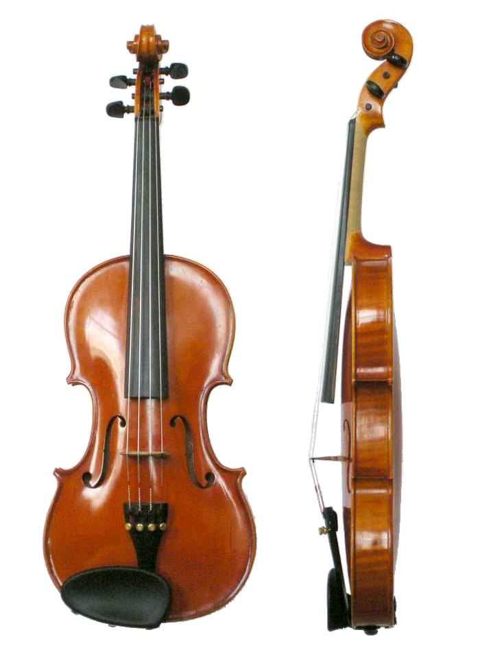
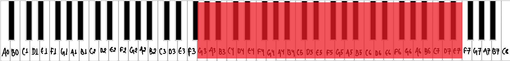
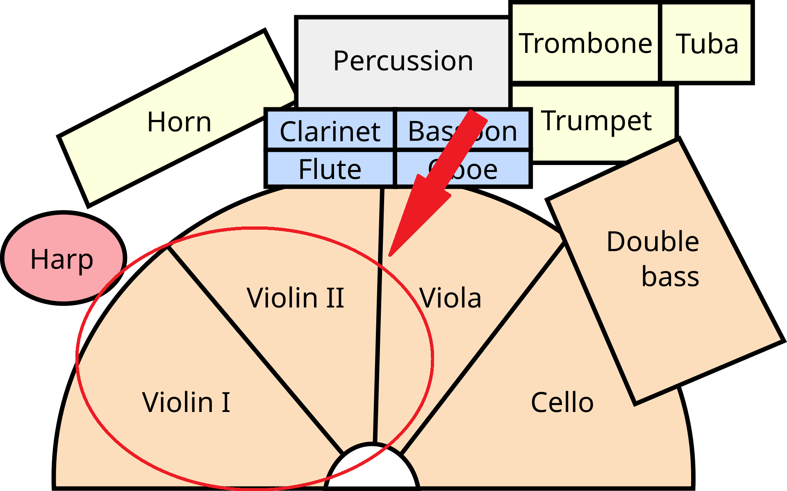
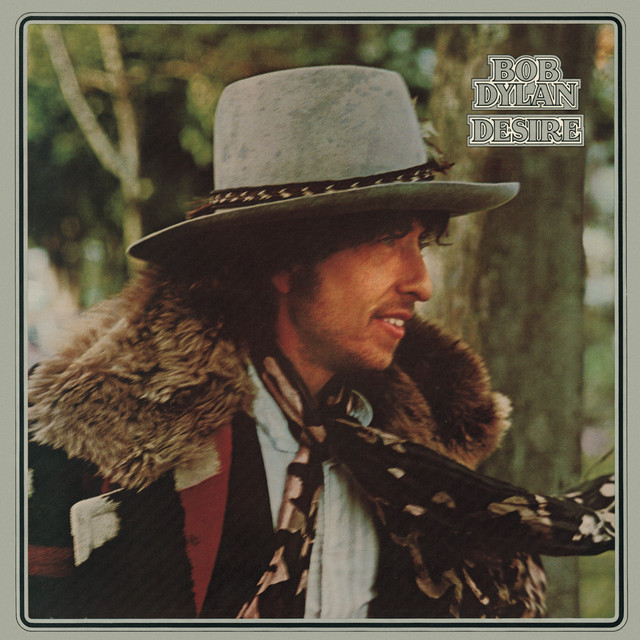
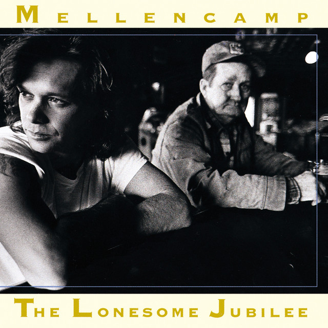
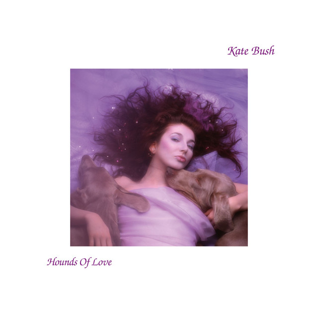
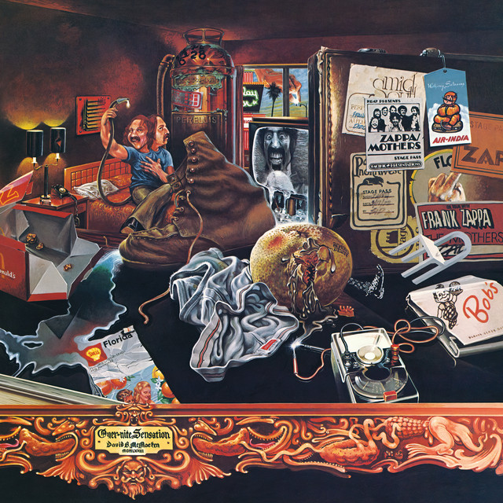

What is a violin?
The violin is a bowed stringed musical instrument and the smallest, highest-pitched member of the violin family, which also includes the viola, cello, and double bass. It typically has four strings tuned in perfect fifths (G–D–A–E) and is played by drawing a bow across the strings or by plucking them with the fingers. [1]


Musical range and clef
The complete standard violin playing range covering all notes accessible through normal fingering in all positions extends from G3 (the lowest open string) to approximately E7, roughly four and a half octaves in total. [2]
The violin range on staff is written entirely in the treble clef. The violin does not use the bass clef under any normal circumstances, as even its lowest open string (G3) sits comfortably within the lower portion of the treble clef staff. [3]

Where is the violinist seated in an orchestra?
The violinist section of an orchestra is further divided into two parts: first violins and second violins. First violins are seated to the conductor's left in semicircular arrangement. Second violins are similar in size to the first violin section, and are seated to the left of the first violinists. [4]
Popular songs/pieces that feature the instrument:

Hurricane

Cherry Bomb

Cloudbusting

Fifty-Fifty
References
- Brittanica, "Violin".
- B Musician, "What is the Violin range?: The Standard Violin Range: From G3 to E7".
- B Musician, "What is the Violin range?: The Violin Range on the Staff".
- The Violin Channel, "What Are The Sections Of The Orchestra? A Guide".